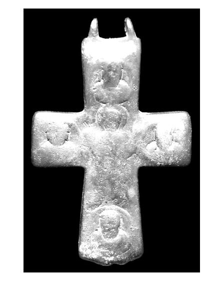

Catalog › CE-0385 · APH2017-4
Valvă izolată de encolpion din aliaj de cupru, cat. 4, Aphrodisias
sec. X–XI (901–1100) · Aphrodisias, Turcia
single valve of a reliquary cross, altul; c. X–XI (901–1100); found at Aphrodisias, Turcia.


Identificare
- Categorie
- Valvă izolată
- Material
- Altul
- Tehnică
- Turnare în relief
- Dimensiuni
- Î 85 × L 55 × Gr 5 mm
Iconografie
- Revers
- Maica Domnului Orantă; Evangheliști în medalioane
- Descriere revers
- Valva reversului, turnată în relief; fața a fost lustruită atât de mult încât relieful aproape s-a nivelat cu fondul și iconografia e foarte neclară. Brațe transversale scurte și dreptunghiulare, brațele verticale ușor lărgite. La centru Maica Domnului orantă, cu portretele celor patru evangheliști în medalioane la capetele brațelor.
- Limba
- Fără inscripție
Datare și atribuire
- Datare
- sec. X–XI (901–1100)
- Centru
- Necunoscut
- Tipologie
- Pitarakis (2006), forma tip I
Descoperire
- Localitate
- Aphrodisias
- Țară
- Turcia
- Context
- Necunoscut
- Coordonate
- 37.7088° N, 28.7238° E
- Precizia locului
- Doar localitatea
Păstrare și referințe
- Nr. inventar
- 65-084
- Bibliografie
- H. Jeffery, The Archaeology of Middle Byzantine Aphrodisias, teză DPhil în arheologie clasică, University of Oxford, aprilie 2019 [Jeffery 2019], vol. 3 (Figures), Descriptive Catalogue Four: Copper Alloy Reliquary Crosses, cat. nr. 4 (paginile nu sunt numerotate în PDF; p. PDF 433), fotografie reprodusă la p. PDF 432.
- Figura
- fotografie în catalog, fără număr de figură
- Planșe
- Jeffery 2019, vol. 3, Cat. Four, p. PDF 432
- Analogii
- Pitarakis (2006), nr. 19–55; Pülz (2017), nr. 50, 53, 54.
- Observații
- Context: Cath.62.14. Autorul spune că e un tip produs la Constantinopol și în Asia Mică în sec. X–XI; fața ar fi avut Răstignirea. Dimensiuni: L. 8,5 × l. 5,5 × gros. 0,5 cm. Material: „copper alloy” (aliaj de cupru) în sursă. Coordonate: ale localității (aproximative), nu date în sursă.
Citare: Corpus Encolpiorum, CE-0385, Valvă izolată de encolpion din aliaj de cupru, cat. 4, Aphrodisias, --root/piese/APH2017-4/ (accesat 2026-10-17).